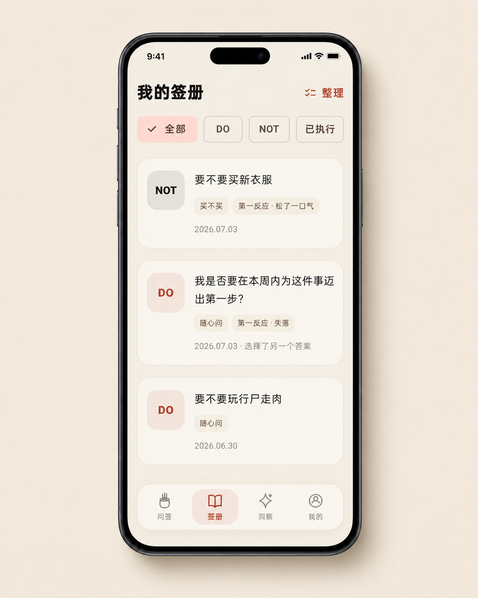
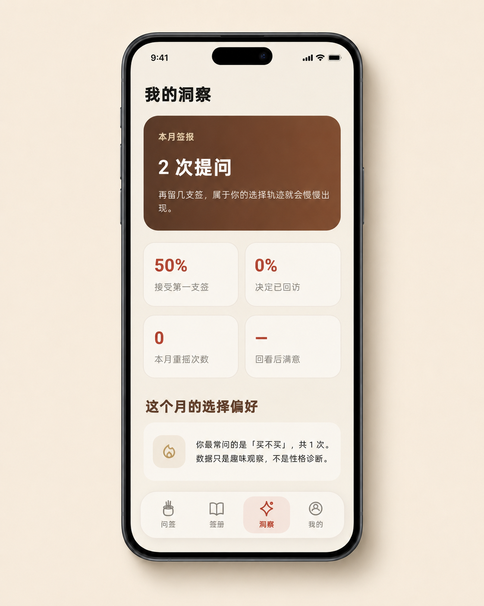
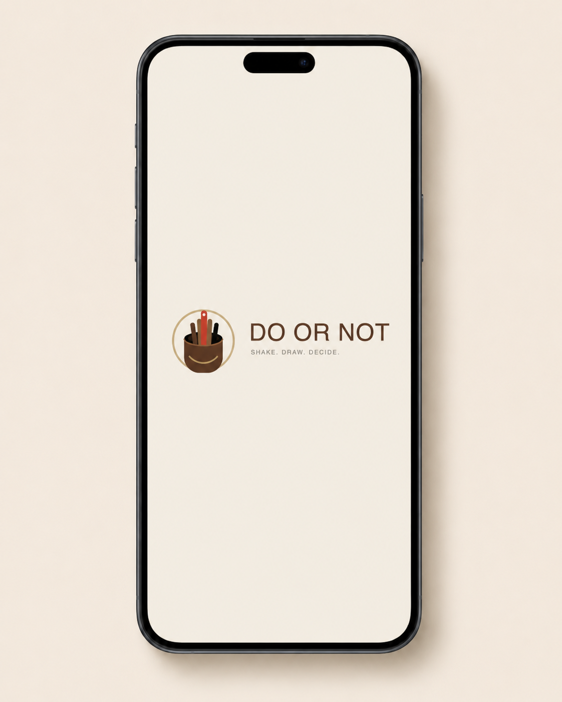
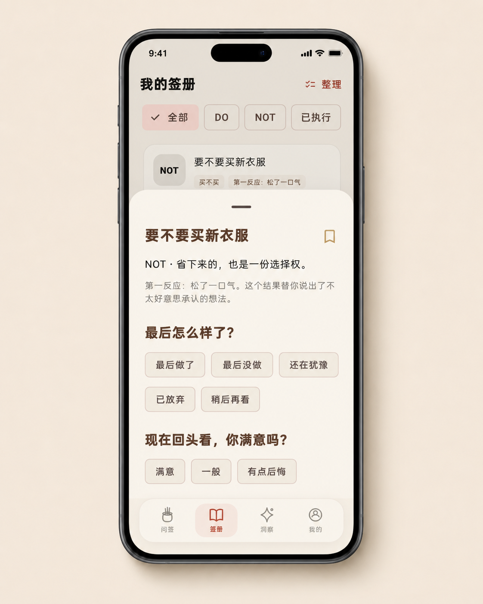

第一反应测试
看到 DO 或 NOT 后，记录开心、失落、松了一口气或无所谓。随机结果不替你决定，却能照见你心里原本的答案。
核心差异化功能DO OR NOT v1.0.2 从一次性的随机抽签，升级为“答案 + 第一反应 + 后续回看”的轻量选择体验。命运给出结果，而你的反应告诉你真正期待什么。



核心抽签依然一步完成；新增能力都围绕“看清第一反应、留下选择轨迹”展开，不把简单工具做成复杂问卷。
看到 DO 或 NOT 后，记录开心、失落、松了一口气或无所谓。随机结果不替你决定，却能照见你心里原本的答案。
核心差异化功能自动保存问题、结果、第一反应和日期，并支持按 DO、NOT、已执行等状态筛选，不再让每次选择转瞬即逝。
补充“最后做了、最后没做、还在犹豫、已放弃、稍后再看”，并记录回头看时是否满意。
查看本月提问数、接受第一支签比例、重摇次数与回访情况。所有结论只作趣味观察，不进行性格诊断。
把模糊或冗长的念头整理成可以用 DO / NOT 回答的问题，减少输入负担，同时保留由你作决定的主动权。
每天获得一条轻量提示，并根据不同问题展示更贴合情境的签语，让每次抽签更有仪式感和新鲜感。
v1.0.2 把完整体验拆成四个自然步骤：提出问题、获得签意、记录反应、回看选择。
写下一个适合用“做或不做”回答的轻量生活问题。
摇一摇获得 DO / NOT，并关注答案出现时最先浮现的感受。

问题、签意与第一反应进入签册，之后可以继续补充实际选择。
记录最后是否执行与满意度，让偶然的一签成为真实的自我观察。

当记录逐渐积累，你可以看到自己最常犹豫的类型、接受第一支签的比例以及回访完成情况。数据只负责提醒，不负责定义你。
新增第一反应测试与对应反馈文案。
新增签册、结果状态与满意度回访。
新增月度洞察和选择偏好摘要。
新增“帮我问清楚”问题整理入口。
新增每日宜忌、情境签语与新版导航。
明确仅适用于轻量生活选择，不用于医疗、法律、财务或安全决策。
下载 DO OR NOT v1.0.2，开始记录属于你的选择轨迹。